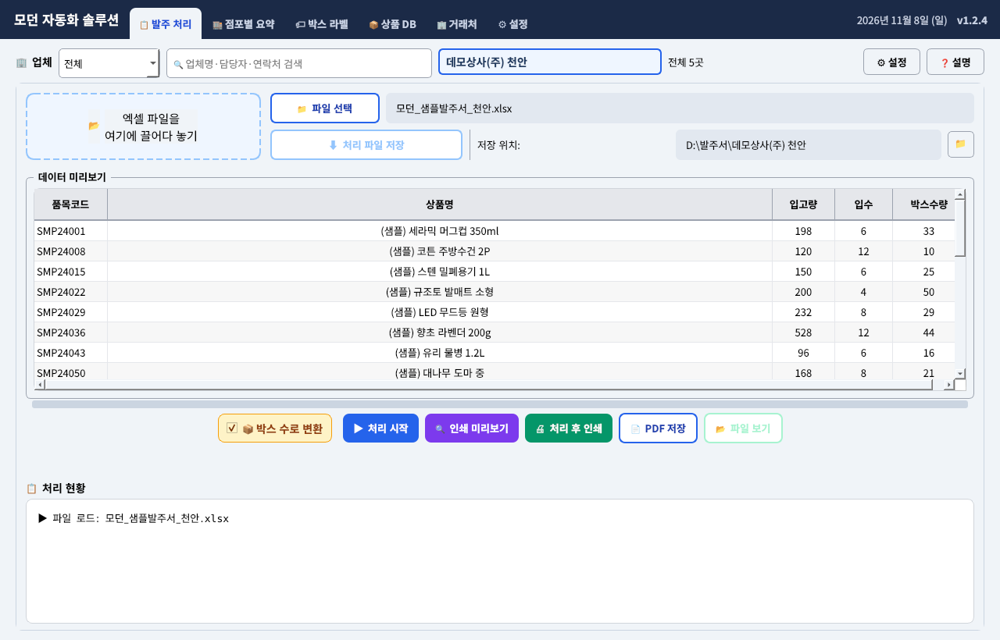
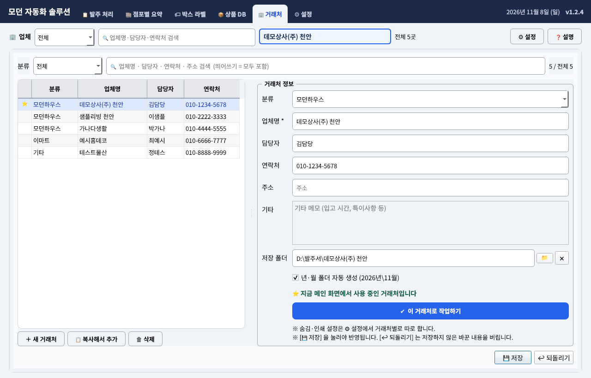
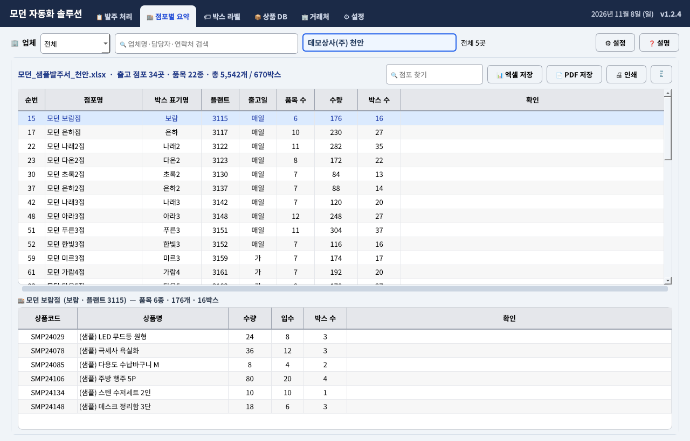
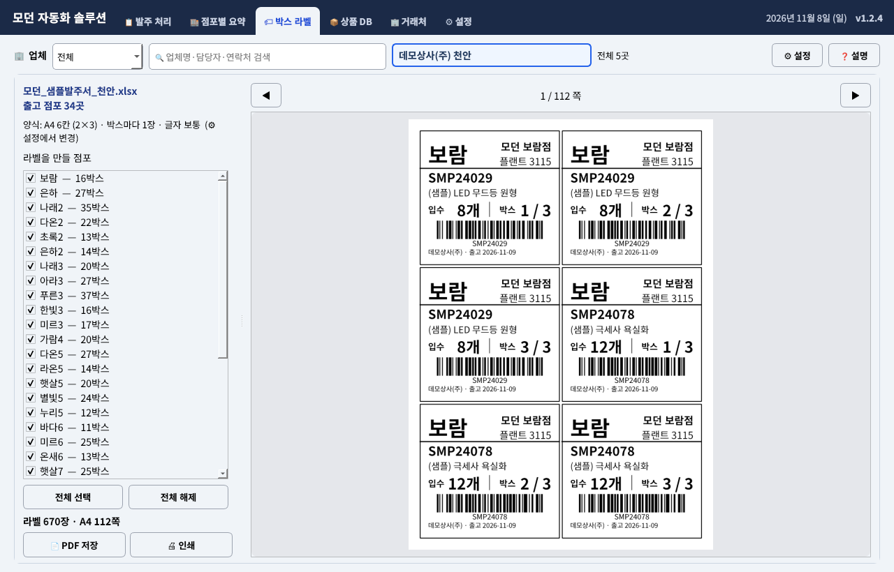
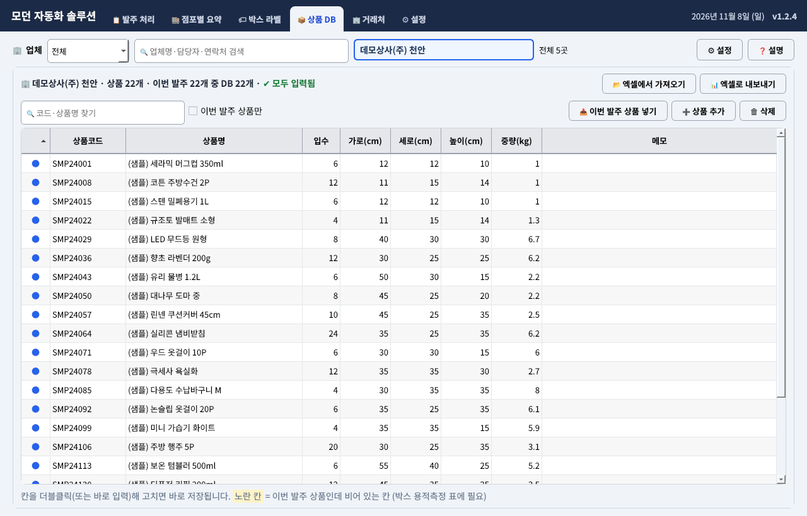
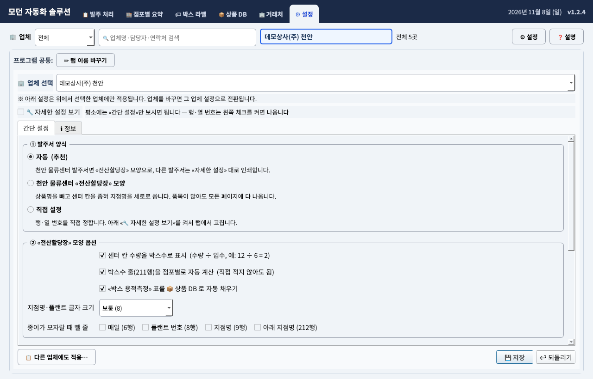

설치·활성화부터 납품 양식 자동 처리, 점포별 요약,
박스 라벨, 상품 DB·용적측정 자동 입력까지 순서대로 안내합니다.
구매 후 받으신 바우처 코드로 1대의 PC에서 영구 사용하실 수 있습니다. 설치와 활성화는 한 번만 하면 됩니다.
SOEZ-XXXX-XXXX-XXXX)를 입력하고 활성화합니다.맨 위 남색 띠의 탭 6개로 기능을 오갑니다. 그 아래 업체 줄은 모든 탭이 함께 쓰고, 오른쪽 끝 [⚙ 설정] [❓ 설명]은 지금 보고 있는 탭의 설정 창과 사용법을 엽니다.

| 탭 | 하는 일 |
|---|---|
| 📋 발주 처리 | 발주 엑셀 넣기, 데이터 미리보기, 처리 시작 / 인쇄 미리보기 / 처리 후 인쇄 / PDF 저장, 박스 수로 변환 |
| 🏬 점포별 요약 | 점포마다 품목 수·수량·박스 수, 점포별 상품 목록, 엑셀·PDF·인쇄 |
| 🏷 박스 라벨 | 박스에 붙일 흑백 라벨(바코드 포함), A4 1칸~65칸 |
| 📦 상품 DB | 상품코드별 입수·박스 크기·중량 → 발주서 «박스 용적측정» 표 자동 입력 |
| 🏢 거래처 | 거래처 추가·수정·삭제, 거래처별 저장 폴더·년월 폴더 |
| ⚙ 설정 | 거래처별 처리·인쇄 설정(간단 / 자세한 설정), 다른 업체에도 적용, 탭 이름 바꾸기 |
거래처마다 설정·저장 폴더·상품 DB가 따로 저장됩니다. 업체 줄에서 거래처를 고르기만 하면 그 업체의 양식·프린터·저장 위치가 자동으로 바뀝니다.

저장 폴더\2026년\11월처럼 달마다 폴더가 생깁니다.발주 엑셀을 끌어다 놓고 [▶ 처리 시작]을 누르면, 수량이 없는 매장 열과 품목 행이 자동으로 숨겨져 납품 양식이 완성됩니다. 원본 파일은 바뀌지 않습니다.
| 자동으로 해 주는 것 | 내용 (천안 «전산할당장» 발주서) |
|---|---|
| 박스수 줄 계산 | 점포마다 «수량 ÷ 입수»를 더해 박스수 줄(211행)을 채웁니다. 발주서에 잘못 적힌 값도 바로잡습니다. |
| 📦 박스 수로 변환 | 버튼 줄 맨 앞 체크 하나로 점포 칸을 박스 수(예: 24개 ÷ 입수 12 = 2박스) ↔ 개수로 바꿔 인쇄합니다. |
| 확인 필요 칸 | 입수로 나누어떨어지지 않는 칸은 빨간 굵은 글씨로 표시하고 «⚠ 확인 필요 n칸»을 알려 줍니다. |
| 박스 용적측정 | 📦 상품 DB에 적어 둔 입수·크기·중량으로 발주서 «박스 용적측정» 표를 채웁니다 (8장). |
| 전산할당장 모양 | 좁은 매장 열, 세로 지점명, 모든 쪽에 상품 열 반복 — 품목이 많아도 모든 페이지에 나옵니다. |
처리 결과를 미리 보고 바로 인쇄하거나 PDF로 저장할 수 있습니다.
넣은 발주서를 점포 기준으로 다시 묶어 보여줍니다. 처리 시작 전에도 바로 볼 수 있습니다.

점포·상품별로 박스에 붙일 흑백 라벨을 만들어 PDF로 저장하거나 바로 인쇄합니다. 시중 A4 라벨지(1칸~65칸)에 맞출 수 있습니다.

상품코드별 입수·박스 크기(가로·세로·높이 cm)·중량(kg)을 한 번 입력해 두면, 처리할 때마다 발주서 «박스 용적측정» 표(12줄)를 자동으로 채웁니다. 상품 DB는 거래처마다 따로입니다.

설정은 거래처별입니다. 평소에는 «간단 설정»만 보면 되고, 다른 양식을 쓸 때만 «🔧 자세한 설정 보기»를 켭니다.

| 상황 | 해결 방법 |
|---|---|
| 활성화가 안 돼요 | ① 인터넷 연결 확인 ② 바우처 코드 정확히 입력(공백·오타) ③ 코드는 1대 PC 전용이라 다른 PC에서 이미 사용했는지 확인하세요. |
| 처리가 안 돼요 | Microsoft Excel이 설치되어 있는지, 올바른 거래처가 선택됐는지 확인하세요. «📂 파일 보기»로 연 엑셀은 닫은 뒤 다시 처리하세요. |
| 용적측정 표가 비어 있어요 | 📦 상품 DB에 크기·중량이 들어 있는지 확인하세요. 이미 처리한 파일(«_처리본»)이 아니라 받은 원본 발주서를 넣어야 합니다. |
| 박스 수가 빨간 글씨예요 | 수량이 입수로 나누어떨어지지 않는 칸입니다. 발주서의 수량·입수를 담당 MD와 확인하세요. |
| 2쪽부터 상품명이 안 나와요 | [⚙ 설정] → 🔧 자세한 설정 → 인쇄의 반복할 열에 A,B처럼 열 문자를 입력하세요. |
| 엉뚱한 프린터로 나가요 | [⚙ 설정] 간단 설정에서 해당 거래처의 프린터를 지정하세요. |
| 그 외 문의 | 문의 게시판 또는 카카오톡 채널로 연락 주세요. |